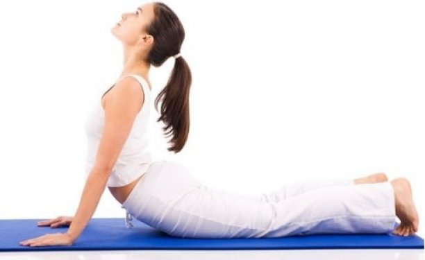

AKADEMİK
SPOR YAPMANIN VÜCÜDA YARARLARI
- 1. Maksimum oksijen kapasitenizi arttırır. Yüksek tansiyon riskini veya ilerlemesini azaltır.
- 2. Yüksek tansiyonu olanların, tansiyonu kontrol altında tutmasına yardımcı olur. Kandaki Triglycerid seviyesinin azaltır.
- 3. Kandaki iyi kolestrolu (HDL) artırır. Dinlenme kalp atımını düşürür.
Süt
- 4. Kalp rezervini artırır. Kalbinizin bir atımda vücuda pompaladığı kan miktarını artırır.
- 5. Kalp krizi geçirdikten sonra, hayatta kalma şansınızı arttırır. Koronerde kan pıhtılaşma hassasiyetini düşürür.
- 6. Kandaki yogunlasmayı azaltır Kalbinizin daha verimli pompalama işlevini yapmasını sağlar



7. Sağlık harcamalarının ve ilaç kullanımının azalmasına yardımcı olur. Yabancı madde kullanımı ile mücadeleye yardımcı olur. Fazla kalorilerin yakılmasına yardımcı olur.
8. Yüksek oranda gıda tüketmenizi sağlar, fakat buna rağmen, kalori dengenizin aynı kalmasına yardımcı olur. Ağır ilerleyen şişmanlığa karşı korur. Denge ve koordinasyonunuzun gelişmesine yardımcı olur.
9. Adet kanamalarından doğan belirtilerin hafiflemesine yardımcı olur. Genel ruhsal durumunuzun gelişmesini sağlar. Kolay ve iyi uyumanıza yardımcı olur.
Bir milletin sporda gösterdiği azim onun geleceğini yükseltir.
Atatürk